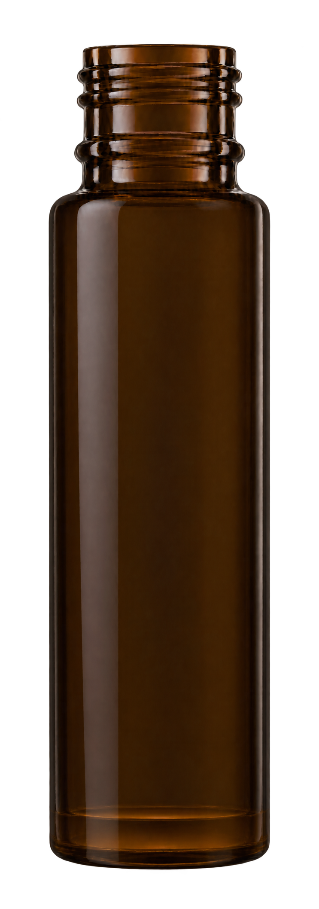
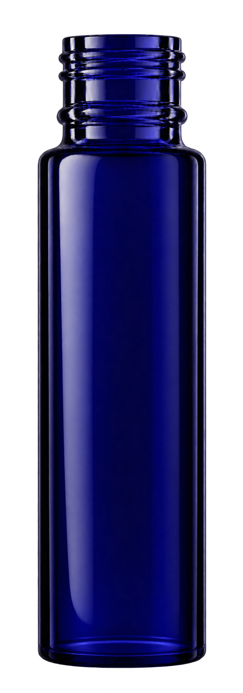

9 ml Cylinder glass material review
Thicker-base candidates shown alongside the existing bottle masters.
Amber · existing

Amber · thicker-base candidate
Cobalt · existing

Cobalt · refined-base candidate